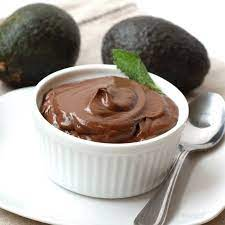
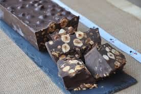
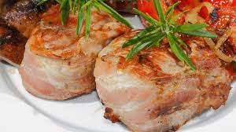
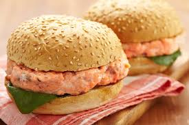

Huevos con relleno de atún y mayonesa

Ingredientes:
6 Huevos
3 Atún en aceite en lata
45 ml de Mayonesa
20 Aceitunas rellenas de anchoa
Salsa de tomate
Preparación:
Lo primero que tenemos que hacer es cocer los huevos durante 10 minutos en agua hirviendo, transcurrido este tiempo, los sacamos del agua y los introducimos en agua fría.
Una vez fríos, los pelamos y cortamos por la mitad a lo largo. Sacamos las yemas y las reservamos para utilizarlas posteriormente para decorar.
Cubrimos el fondo de una bandeja o fuente con la salsa de tomates y cogemos un bol y añadimos el atún, la mayonesa y las aceitunas, éstas últimas las habremos troceado previamente, reservando unas pocas para decorar. Removemos bien la mezcla
Ayudándonos de una cuchara, rellenamos con la mezcla los huevos que habíamos colocado en una bandeja, la damos forma y lo adornamos con los restos de aceitunas que habíamos reservado.
En la bandeja con salsa de tomate, colocamos los huevos con la mezcla, desmenuzamos las yemas que habíamos reservado y adornamos la bandeja con ellas.
Ensalada griega especial

Ingredientes:
8 huevos
1 Cebolleta
120 g de Tomates cherry
100 g de Aceitunas negras
100 g de Queso feta
Aceite de oliva
Sal
Perejil picado
Preparación:
Esta receta la comenzaremos batiendo los huevos a los que echaremos un poquito de sal y una cucharada de perejil picado.
Picamos bien la cebolleta que quede menuda y colocamos al fuego la sartén a la que añadiremos un chorro de aceite de oliva.
Sofreímos la cebolleta menuda durante aproximadamente 4 minutos, hasta que ésta se dore, después añadimos los tomates cherry que habremos partido previamente, por la mitad, agregamos las aceitunas negras y lo mantenemos al fuego durante 2 minutos.
Cuando los tomates empiecen a quedar blandos, encendemos el grill del horno, bajamos el fuego de la sartén y añadimos los huevos que hemos batido. Los dejamos unos 5 minutos más, hasta que los huevos se cuajen.
Vertemos el contenido de la sartén a una bandeja para horno, añadimos en queso feta desmenuzado sobre la mezcla y lo metemos al horno donde se gratinará durante 5 minutos, cuando la superficie esté dorada, lo sacamos y espolvoreamos con el perejil fresco.
Mousse de chocolate con palta

Ingredientes:
1 Aguacate bien maduro
1-2 Cucharadas de cacao puro en polvo sin azúcar
1-2 Cucharadas de miel
30-40 ml de leche
1/2 Cucharadita de esencia de vainilla
Sirope de ágave
Sal
Coco rallado
Frutas rojas
Preparación:
Lo primero es pelar el aguacate procurando no llevarnos mucha carne, tiramos el hueso y troceamos la carne del aguacate.
Colocamos en el vaso de la batidora, la carne del aguacate y añadimos el cacao en polvo, la miel, el sirope, una pizca de sal, la vainilla y la leche.
Trituramos bien todos los ingredientes hasta que quede con la textura a nuestro gusto, si nos queda demasiado espesa podemos echar más leche. Vertemos la mezcla en un recipiente que cerraremos herméticamente.
Colocamos el recipiente en la nevera y lo dejamos durante dos horas aproximadamente para que se enfríe bien. Después lo sacamos y lo servimos en cuencos bonitos.
Sólo nos queda decorar, para hacerlo, pondremos un poco de coco rallado por encima, frutos rojos y un trocito de chocolate negro rallado y servimos.
Huevos con jamón serrano

Ingredientes:
2 Huevo
2 Lonchas de Jamón serrano
50 g Cebolla
50 g Queso Mozzarella
Perejil fresco
Sal
Pimienta negra molida
Preparación:
Engrasamos con mantequilla unos moldes y enrollamos una loncha de jamón en cada uno de ellos. Picamos la cebolla, las cebollas, unas ramas de perejil y el queso Mozzarella.
Batimos los huevos en un bol y añadimos la cebolla, el perejil y el queso, esta mezcla la salpimentamos a nuestro gusto.
Con la mezcla, rellenamos el molde, llenándolo hasta arriba. Colocamos los moldes en el horno que previamente hemos precalentado a 180ºC, durante 25 minutos.
Transcurrido este tiempo, lo sacamos y servimos antes de que se enfríe.
Turrón de chocolate y almendras cetónico

Ingredientes:
200 g Chocolate negro mínimo 85%
125 g Almendras crudas
30 ml Aceite de oliva virgen extra
Sal una pizca
Preparación:
Tostamos las almendras un poquito en la sartén sin aceite, para que no se queme removeremos bien. Dejamos enfriar.
Picamos el chocolate en trozos finitos y ponemos a calentar un recipiente para poner a baño maría, ten cuidado que no hierva y que no toque el recipiente superior.
Echamos la mitad del chocolate al baño maría, lo derretimos y añadimos el resto de chocolate y lo mantenemos al baño maría hasta que se funda el chocolate quedando una pasta homogénea.
A continuación, mezclamos el chocolate con aceite de oliva, removemos con las varillas suavemente, hasta que quede totalmente incorporado. Si queremos, podemos echar una pizquita de sal para darle más sabor.
Repartimos las almendras en un molde y vertemos el chocolate sobre ellas, ayudándonos de una pala, lo distribuimos bien por encima.
Cubrimos todo bien con el fin de que las almendras queden perfectamente cubiertas y sin burbujas de aire. Ya solo queda que se enfríe a temperatura ambiente y se solidifique completamente, este proceso puede durar unas 4 horas. Una vez endurecido, ya podemos servirlo.
Cerdo asado con salsa

Ingredientes:
900 gramos de paleta de cerdo
1 hoja de laurel
Sal
Agua
Pimienta negra
Tomillo seco o romero
Aceite de oliva
Jengibre fresco
Pimentón
Nata batida (unos 350 ml)
Preparación:
Usaremos principalmente el horno, así que comienza precalentando a unos 100 a 200ºF. Mientras se calienta, salpimentamos la carne y la colocamos en una fuente donde podamos cubrirla con agua al menos en un tercio. Añadimos el laurel, dos cucharaditas de tomillo seco o de romero y 5 granos de pimienta negra. Lo cubrimos todo con papel de aluminio y lo metemos al horno. Tendrá que estar unas 7 u 8 horas. Una vez listo, el jugo que suelta, lo reservaremos.
Ahora subiremos la temperatura del horno hasta 220ºC. Y rallamos el ajo, el jengibre y lo mezclamos en un bol junto con el aceite, la pimienta y las hierbas. Con esta mezcla untaremos la carne. La pondremos a asar durante 15 minutos. Pasado este tiempo, sacamos y está lista para comerla. Podemos cortarla en lonchas finas. Para darle sabor a este asado con salsa de carne, usa como salsa los jugos que extrajiste anteriormente.
Hamburguesa keto de salmón con puré

Ingredientes:
650 gramos de salmón
1 huevo
Media cebolla
Sal
Pimienta
Mantequilla
450 gramos de brócoli
Queso parmesano rallado
2 cucharadas de zumo de limón
Preparación:
Empezaremos precalentando el horno a unos 100 ºC. Mientras calienta, vamos cortando el salmón y lo añadimos junto con el huevo, la cebolla, 1 cucharadita de sal y media de pimienta negra en un procesador de alimento. Tenemos que conseguir una mezcla homogénea de consistencia gruesa.
El siguiente paso es coger la mezcla y darles forma a las hamburguesas. Las freiremos en mantequilla.
A continuación, ponemos a cocer el brócoli cortado en agua salada. Una vez cocido, escurrimos y le agregamos queso parmesano y mantequilla al gusto. Sazonamos y echamos un poco de pimienta.
Solo nos queda preparar la mantequilla de limón. Para esto, mezcla la mantequilla con zumo de limón. Salpimentamos.
Acompañamos las hamburguesas con el puré de brócolis y la salsa de mantequilla al limón. Lo calentamos en el horno unos minutos para que se mezclen los sabores.